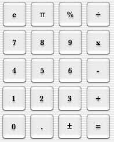

Creating Number Buttons
Now it is time to begin the real work on the interface.

- In the Cocoa-views palette, drag over a button (either a Push Button, Square Button, or Rounded Bevel Button) from the palette to your main interface window.
- Double-click on the new button and type in a number. Repeat this step so there are 10 numbers, 0 through 9.
- In the Info palette, you can assign a button to each of these keys by typing in the appropriate number in the Equiv text field. This enables the program so when the user types in numbers from the keypad to be entered in, instead of having to click on each button.
- For other buttons, such as the operators and = button, follow a similar procedure. For the = button, you can assign the Enter key. If you are using Push Buttons, this button will be highlighted in blue, indicating it as the default button when Enter is pressed.